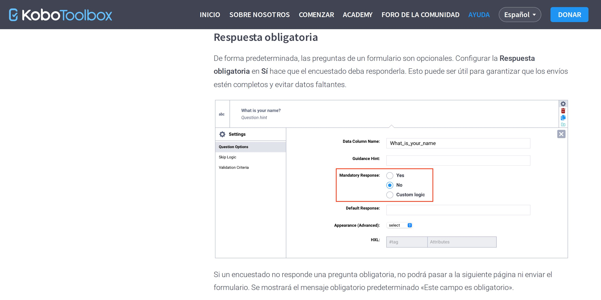
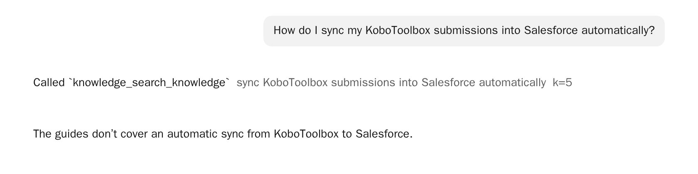

What's on the kit
The same guides the kit's library offers for reading, made searchable for the assistant. They are prepared once, when the kit's content is made, and travel with it: nothing is downloaded in the field.
| Guide | Languages | Pages | Licence |
|---|---|---|---|
| KoboToolbox user guide (support.kobotoolbox.org) | English, Spanish, French | 426 | Kobo's own |
| ODK documentation (KoboCollect is based on ODK Collect; form design, XLSForm) | English | 146 | CC BY 4.0 |
| QGIS documentation (user manual, training manual, introduction to GIS) | English, Spanish, French | about 800 | CC BY-SA 3.0 |
XLSForm.org's guide was searched in testing, but isn't on kits: the site publishes no licence yet, and we have asked. Next: a deployment's own documents (protocols, the assessment's terms of reference, sector guidance), added before the kit leaves.
The guides are for everyone who uses the kit, so they never hold personal data. Submissions stay in KoboToolbox, and the assistant reaches them only with the user's own permissions.
How to ask
Ask the assistant as you would ask a colleague. It looks things up by itself for questions about KoboToolbox, KoboCollect, web forms, XLSForm, ODK and QGIS:
![The assistant on the kit. Question: how do I put an offline basemap (mbtiles) on the phone for the geopoint question? It called knowledge_search_knowledge with offline basemap mbtiles phone geopoint question. Answer: prepare the .mbtiles file, copy it to the device, then in ODK Collect, Settings, Maps, add it as a reference layer, or import it to the Collect projects' layers folder; select the layer in a geopoint, geotrace or geoshape question. Sources: two links to http://kobo.local/docs/odk/collect-offline-maps.html, at the quick start and at manually importing mbtiles files.](static/knowledge/answer-odk.jpg)
![Question: what goes in the choice_filter column? The assistant searched for choice_filter column, then answered: the choice_filter column contains an expression that filters the rows of the choices sheet for that select question; it must evaluate to true or false and typically references a column in choices and a previous answer, for example category equals the job category answer, or selected of the parent question and name. Sources: the KoboToolbox guide's choice filters page, at adding dynamic choice filters, and the ODK documentation's form logic page, at filtering options in select questions.](static/knowledge/answer-choice-filter.jpg)
- Exact names work. A column name (
choice_filter,select_one_from_file), a function (pulldata) or the text of an error message ("Value not allowed") finds the page that explains it. - Plain questions work too. "I need the age to be between 18 and 65" finds validation criteria without the word.
- Say what you're using when it matters: "in the Formbuilder" or "in XLSForm", "in KoboCollect" or "in a web form".
- It changes nothing. Looking things up needs no permission, and a how-to answer never edits a project; anything that would change data still asks first.
Sources that open on the kit
Every answer should end with the pages it came from. They are links to the kit's own copy of the guide (http://kobo.local/docs/…), at the section, so they open on a phone or laptop on the kit's Wi-Fi with no internet. Check the source when an answer matters: the assistant makes mistakes (see below).


Languages
Ask in any language. The search works by meaning across languages, so a question in Swahili or Arabic finds a page written in English. It then prefers pages in the question's language when the guide has them (English, Spanish or French for the KoboToolbox guide), and English otherwise. The assistant answers in the language of the question.

When the guides don't cover it
The assistant is told to say so, rather than answer from memory, and never to describe a menu or setting the guides don't mention. It usually does:


But not always: in testing it once described a form setting that doesn't exist, and cited a real page for it (see below). Treat an answer as a pointer to the guide, and the guide as the authority.
On the status page
The kit's status page has a Documentation search row: green when the assistant can search the guides. If it isn't working, the assistant still works with KoboToolbox, but can't look things up; restarting the kit usually fixes it.
What was measured
On the test environment: the guides above (1,378 pages, 13,043 sections) on the CPU-only test machine, and the agent model (gpt-oss-120b) on a GPU machine. The questions: 20 from Kobo's support chatbot, which has the same job online, and 25 written for the kit, in seven languages, including exact names, ODK and QGIS questions, plus 11 the guides can't answer.
Finding the right page (45 questions with an answer in the guides):
| Search | Right page first | In the first 3 | In the first 8 | Time a question |
|---|---|---|---|---|
| By meaning and exact words (kits without a GPU) | 49% | 73% | 89% | 0.1 s |
| Then reordered by a second model (kits with a GPU) | 53% | 76% | 89% | 0.1 s on a GPU; 14–19 s without |
The first result was in the question's language (or English) for every question. On the KoboToolbox guide alone (33 questions) the right page was in the first 3 for 79% and the first 8 for 94%. Searching by exact words, besides meaning, is what finds names like pulldata.
Answers (56 questions, the agent model through the assistant): 32 passed every check. It searched first for 47, never made up a page in 54, cited one of the expected pages for 28 of 49, answered in the question's language every time it could be told, and never tried to change anything. Of the questions the guides can't answer, it said so for 4 of 7, invented a setting once, answered one from memory (correctly, but without checking), and wrote the code asked for in the last. The common failure: answering without a source, or from a neighbouring page. Questions about doing something with data ("I need the data in SPSS") it took as a task, not a how-to.
Limits
- The assistant needs the recommended hardware (a graphics card or the 128 GB tier); the search itself runs on any kit.
- Answers can be wrong. Check the cited page for anything that matters.
- The guides are as of when the kit was prepared. A newer KoboToolbox release on an updated kit comes with its guide.
- No way to add your own documents yet; planned before deployment.
- Similarity alone can't tell a question the guides answer from one they don't: the assistant has to judge from what it reads.
Technical details
- On the kit:
remote/knowledge/, an MCP server atknowledge.kobo.localwith read-only tools (search_knowledge,read_document,list_collections), registered in OpenCode with instructions for using them. The index is one SQLite file (full-text search and float16 vectors), built when the content pack is made and shipped in it. - Models: bge-m3 (MIT) for meaning, on llama-server, CPU only (a question takes about 50 ms); bge-reranker-v2-m3 (Apache 2.0) to reorder, off unless there's a GPU.
- Pages are the library's own HTML, cut into sections with the support chatbot's chunker; each section keeps its anchor, so a citation opens at it.
- The checks are
knowledge/eval.py(finding pages) andknowledge/answers.py(answers through the assistant); the results are inremote/results/.